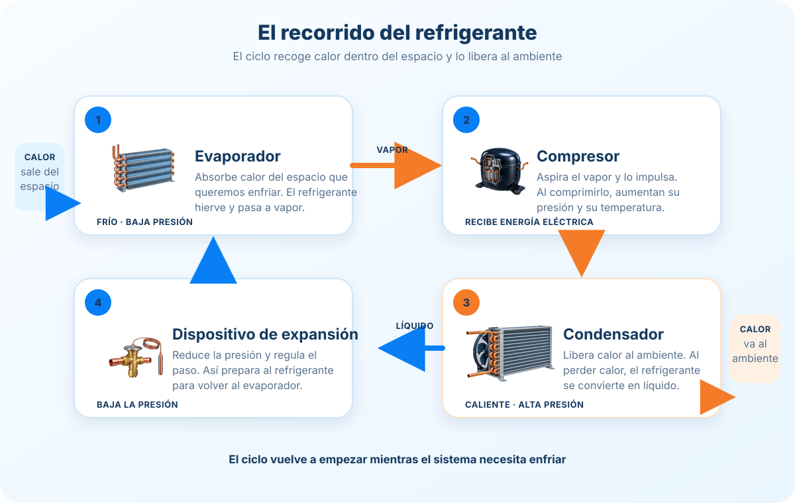

Evaporación
El refrigerante absorbe calor en el evaporador y parte del líquido hierve hasta convertirse en vapor.
Descubrí cómo se traslada el calor, cómo circula el refrigerante y qué función cumple cada etapa de un sistema.

Abrí cada tema cuando quieras. Así podés avanzar a tu ritmo.
Una heladera extrae calor de su interior y lo libera en la habitación. Por eso el interior se enfría mientras que la parte exterior puede sentirse tibia.
Describe el estado térmico de un cuerpo: qué tan caliente o frío está.
Es energía que se transfiere entre cuerpos cuando existe una diferencia de temperatura.
El refrigerante absorbe calor en una zona y lo libera en otra. Para trasladarlo desde una zona más fría hacia el ambiente, el sistema necesita energía.
El refrigerante absorbe calor en el evaporador y parte del líquido hierve hasta convertirse en vapor.
El compresor aspira el vapor y eleva su presión y temperatura usando energía.
El refrigerante libera calor al exterior y vuelve principalmente al estado líquido.
El dispositivo de expansión reduce la presión y prepara al refrigerante para volver al evaporador.
El recorrido se repite mientras el sistema necesita retirar calor.
Cada refrigerante tiene su propia relación entre presión y temperatura de ebullición. En el ciclo básico, al disminuir la presión disminuye también la temperatura a la que hierve; al aumentar la presión, aumenta esa temperatura.
El refrigerante está más frío que el espacio que se quiere enfriar y puede absorber calor.
El refrigerante está más caliente que el ambiente y puede liberar calor hacia él.
La relación exacta depende del refrigerante. Por eso, una presión no se interpreta aislada de la sustancia y de las condiciones del sistema.
En muchos diseños se busca que llegue vapor al compresor, porque la presencia de líquido puede perjudicar algunos tipos de compresor. Los equipos y sus controles pueden variar.
Desde la salida de expansión, por el evaporador y la tubería de retorno hasta la entrada del compresor.
Desde la salida del compresor, por el condensador y la línea de líquido hasta el dispositivo de expansión.
El lado de alta no contiene solo líquido: entre el compresor y el condensador circula vapor caliente. En una instalación real, la presión varía ligeramente a lo largo de las tuberías.
La carga térmica es todo el calor que llega al espacio refrigerado y que el sistema debe retirar para mantener la temperatura prevista.
El calor pasa entre el aire y el refrigerante en los serpentines. Las aletas amplían la superficie disponible y los ventiladores ayudan a mover el aire. El polvo o las obstrucciones pueden dificultar ese intercambio.
Indica cuánto calor puede retirar el equipo en un tiempo determinado y bajo condiciones específicas.
Describe cuánto enfriamiento proporciona en relación con la energía que necesita para hacerlo.
No son lo mismo: un equipo puede tener gran capacidad, pero necesitar mucha energía. El rendimiento depende de las condiciones de trabajo, como la temperatura exterior y el intercambio de calor en los serpentines.
Un termostato o control electrónico detecta la temperatura y regula cuándo o cuánto trabaja el sistema. Algunos compresores funcionan encendiendo y apagando; otros pueden ajustar su capacidad.
Si una superficie del evaporador está más fría que el punto de condensación del aire, parte de la humedad se deposita en ella. Si está bajo cero, puede formar escarcha. Cuando se acumula demasiado, dificulta el paso del aire. Según el equipo, el deshielo ocurre durante una pausa o mediante un ciclo automático.
El ciclo de compresión de vapor es muy común, pero no es la única forma de refrigerar:
Usa calor y una pareja de sustancias para impulsar el proceso.
La electricidad mueve calor a través de un material especial.
El agua al evaporarse enfría el aire y, en los sistemas directos, le aporta humedad.
Respuestas: calor; aumenta presión y temperatura; en el condensador; reduce la presión y prepara el refrigerante para volver al evaporador.